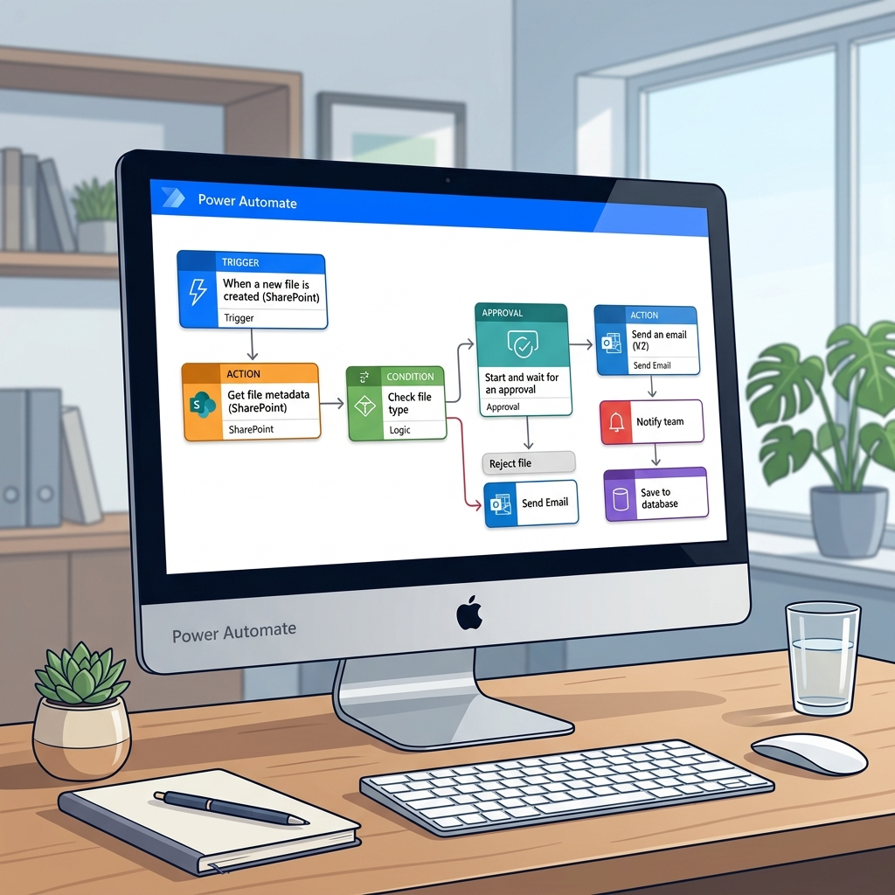

Power Platform Core Components
An introduction to the full Microsoft Power Platform suite — six interconnected tools that empower every organisation to build apps, automate processes, analyse data, and deploy intelligent chatbots.
Microsoft Power Platform Overview
Microsoft Power Platform is a suite of low-code and no-code tools that empower users to build business solutions without deep technical expertise. All components share a common data foundation through Microsoft Dataverse.
⚡ Power Apps
Build custom apps for web and mobile — no coding required.
🔄 Power Automate
Automate repetitive workflows and business processes.
📊 Power BI
Visualise and analyse data with interactive dashboards and reports.
🤖 Power Virtual Agents
Create intelligent chatbots without writing code.
🌐 Power Pages
Design and publish secure external-facing business websites.
🧠 AI Builder
Embed pre-built AI models into your apps and flows.
Power Apps
Power Apps is a low-code development platform that enables anyone to build custom business applications — without writing traditional code. It connects to hundreds of data sources and services.
Canvas Apps
Build apps from a blank canvas — drag and drop UI elements and connect any data source. Highly flexible for custom experiences.
Model-Driven Apps
Automatically generate apps from your Dataverse data model. Best for complex business processes with defined data structures.
Power Pages
Build external-facing websites connected to your business data — for customers, partners, and stakeholders.
900+ Connectors
Connect to SharePoint, Salesforce, SQL Server, Office 365, Azure, SAP, and hundreds more out of the box.
Power Automate
Power Automate enables users to create automated workflows between applications and services — eliminating manual, repetitive tasks and improving productivity across the organisation.
Automated Flows
Triggered automatically by events — e.g. a new email arrives, a file is uploaded, or a form is submitted.
Instant Flows
Triggered manually by a user — via a button in an app, mobile device, or Microsoft Teams.
Scheduled Flows
Run on a set schedule — daily reports, weekly data syncs, monthly reminders.
Business Process Flows
Guide users through a sequence of steps to ensure consistent execution of multi-stage processes.
Desktop Flows (RPA)
Automate legacy applications and desktop tasks using Robotic Process Automation (UI automation).

Power BI
Power BI is Microsoft's business analytics service. It turns raw data into meaningful interactive visualisations and reports that help organisations make data-driven decisions.
Connect
Connect to hundreds of data sources — Excel, SQL, cloud services, APIs
Transform
Clean and shape data with Power Query before loading
Visualise
Create interactive charts, maps, tables, and dashboards
Share
Publish and share reports via Power BI Service or embed in apps
Power BI Desktop
Free Windows application for building and designing reports with full modelling capabilities.
Power BI Service
Cloud-based platform for publishing, sharing, and collaborating on reports and dashboards.
Power BI Mobile
Access and interact with your dashboards and reports from iOS and Android devices.
Power BI Embedded
Embed interactive visuals directly into custom applications and websites for end-users.
Power Virtual Agents
Power Virtual Agents (PVA) allows anyone to create intelligent, AI-powered chatbots without code. Bots can be deployed across Microsoft Teams, websites, and other channels to automate customer and employee support.
No-Code Bot Creation
Build bots using a guided graphical interface — define topics, questions, and responses without any code.
Integrate with Power Automate
Trigger automated workflows from within chatbot conversations — e.g. submit a leave request, fetch an order status.
Multi-Channel Deployment
Deploy bots on Microsoft Teams, websites, Facebook Messenger, and other channels from one interface.
Built-in Analytics
Monitor bot performance with conversation rate, resolution rate, and escalation metrics.
Power Pages
Power Pages is a secure, enterprise-grade, low-code SaaS platform for creating, hosting, and administering modern external-facing business websites — accessible to users outside your organisation.
External Business Websites
Create portals for customers, partners, suppliers, and job applicants without managing infrastructure.
Secure Data Access
Control what external users can see and do using table permissions and web roles — powered by Dataverse.
Design Studio
Use the visual page editor to design professional layouts with pre-built sections, forms, and lists.
Form Submissions
Collect data from external users directly into Dataverse tables via web forms — fully governed.
AI & Copilot Integration
Use Copilot to generate site content, images, and chatbot experiences directly within Power Pages.
Cross-Cutting Features
These foundational capabilities run across all Power Platform components, enabling AI, connectivity, and data management from a single unified layer.
AI Builder
Pre-built and custom AI models that can be embedded in Power Apps and Power Automate — including document processing, object detection, text classification, and prediction models.
Microsoft Dataverse
The secure, cloud-based data platform that underpins all Power Platform components. Stores structured business data in tables with built-in security, logic, and integration.
Connectors
Over 900 pre-built connectors to external services — Microsoft 365, Dynamics 365, Azure, Salesforce, SAP, Twitter, and more. Custom connectors can also be built using APIs.
Business Value & Impact
Understand why organisations adopt the Power Platform, what measurable outcomes they achieve, and how to articulate the strategic value of digital transformation powered by low-code tools.
The Challenge Organisations Face
Modern organisations face a growing gap between the demand for digital solutions and the availability of traditional development resources. Power Platform bridges this gap.
Slow IT Delivery
Traditional software development cycles take months or years — business needs change faster than IT can deliver.
High Development Costs
Hiring specialised developers is expensive. Many business problems go unsolved due to cost constraints.
Data Silos
Business data lives in multiple disconnected systems, making it hard to get a unified view or automate across them.
Manual Repetitive Work
Employees spend hours on repetitive tasks like approvals, data entry, and report generation — reducing productivity.
Empowering Business Transformation
Power Platform delivers transformation across six key dimensions — enabling organisations to do more with the resources they already have.
Accelerate Development
Reduce app development time from months to days using low-code tools and pre-built templates.
Reduce Costs
Eliminate the need for expensive custom development for many business problems through citizen development.
Connect Systems
Break down data silos by integrating 900+ applications and services through a single connector library.
Improve Agility
Respond to changing business needs faster — build, iterate, and deploy solutions without lengthy development cycles.
Empower Employees
Give business users the tools to solve their own problems — increasing ownership, engagement, and productivity.
Maintain Governance
Retain IT control through environment policies, data loss prevention, and admin centre oversight.
Measurable Impact
Organisations using Microsoft Power Platform report significant, quantifiable outcomes across productivity, cost savings, and time-to-market.
Faster App Development
Apps are built up to 74% faster compared to traditional development methods.
Return on Investment
Organisations typically report a 3× ROI within the first year of Power Platform adoption.
Process Automation Rate
Up to 89% of manual, repetitive processes can be automated using Power Automate flows.
Key Takeaways — Business Value
Core concepts to remember for the PL-900 exam and real-world understanding.
Low-Code Platform
Power Platform reduces the barrier to building solutions — enabling business users (not just developers) to create apps, flows, and reports.
Cost & Speed
Organisations save significantly on development costs and deliver solutions orders of magnitude faster than traditional software projects.
Unified Data
Dataverse connects all platform components, eliminating silos and enabling a single source of truth for business data.
Governed Innovation
IT retains governance and security controls while business users innovate — a balanced "guardrails, not gatekeepers" approach.
Integrations & Ecosystem
Power Platform does not operate in isolation. It integrates natively with Microsoft Dynamics 365, Microsoft 365, Teams, and Azure — creating a unified, intelligent business ecosystem.
Power Platform & Dynamics 365
Microsoft Dynamics 365 is an enterprise business application suite (CRM and ERP). Power Platform integrates seamlessly with Dynamics 365, sharing the same Dataverse foundation.
Shared Data Foundation
Both Power Platform and Dynamics 365 use Microsoft Dataverse as their data platform — data created in one is immediately accessible in the other.
Extend Without Code
Customise Dynamics 365 apps by adding Power Apps screens, automating Dynamics workflows with Power Automate, and visualising CRM data in Power BI.
Unified Reporting
Combine Dynamics 365 sales, finance, and operations data in Power BI dashboards for comprehensive business intelligence.
AI-Powered Insights
Apply AI Builder models directly to Dynamics 365 data — e.g. predict customer churn, classify support tickets automatically.
Power Platform & Microsoft 365
Power Platform is deeply embedded into the Microsoft 365 ecosystem — enabling automation, app-building, and analytics directly within the tools your organisation already uses daily.
Outlook Integration
Trigger Power Automate flows from emails, create approvals, and process attachments automatically without leaving Outlook.
SharePoint Integration
Build Power Apps directly on SharePoint lists, and automate SharePoint document management workflows with Power Automate.
Excel & OneDrive
Use Excel files stored in OneDrive as a data source for Power Apps and Power BI — ideal for smaller datasets and transition projects.
Teams Integration
Embed Power Apps and Power Virtual Agents bots directly inside Microsoft Teams — making solutions accessible where employees already work.
Forms & Lists
Automatically process Microsoft Forms responses or Microsoft Lists updates using Power Automate triggers.
Single Sign-On
Users authenticate once with their Microsoft 365 credentials — seamlessly accessing all Power Platform tools and data.
How Power Platform Apps Work Together
The true power of the platform lies in how each component complements the others — creating end-to-end business solutions from data capture through to insights.
Capture
Power Apps collects data from employees and customers
Automate
Power Automate processes and routes data automatically
Store
Dataverse stores structured, governed data centrally
Visualise
Power BI turns stored data into interactive insights
Decide
Leaders make informed decisions from real-time reports
End-to-End Automation
A Power App form → triggers a Power Automate approval flow → stores the result in Dataverse → updates a Power BI dashboard automatically.
Common Data Model
Dataverse's Common Data Model (CDM) provides standardised table definitions for common business entities — Customer, Order, Contact, Product — ensuring consistency.
Microsoft Teams Integration
Microsoft Teams is the hub for collaboration in Microsoft 365. Power Platform integrates deeply with Teams, bringing apps, automation, and bots directly into the Teams interface.
Embedded Power Apps
Add any Power App directly as a Teams tab — employees can access business tools without leaving their collaboration workspace.
Power Automate for Teams
Automate approvals, notifications, and task assignments directly within Teams conversations and channels.
Power Virtual Agents Bots in Teams
Deploy intelligent chatbots inside Teams to help employees answer questions, submit requests, and get self-service support without human intervention.
Power BI Reports in Teams
Embed interactive Power BI reports directly into Teams channels — enabling data-driven discussions in the context of the work itself.
Dataverse for Teams
A built-in, lightweight version of Dataverse available directly in Teams — enables small teams to build apps and store data without a separate Dataverse environment.
Power Platform & Azure Services
Power Platform and Azure complement each other — Power Platform provides the low-code front end, while Azure provides the scalable back-end infrastructure, AI, and developer tools.
Azure SQL & Cosmos DB
Connect Power Apps and Power Automate directly to Azure SQL databases and Cosmos DB for enterprise-scale data storage.
Azure Active Directory
Power Platform uses Azure AD for identity and access management — single sign-on, conditional access, and multi-factor authentication.
Azure AI Services
Integrate Azure Cognitive Services (Vision, Language, Speech) into Power Platform flows and apps via custom connectors.
Azure Functions & Logic Apps
Extend Power Platform with custom business logic hosted in Azure Functions, or coordinate with Azure Logic Apps for enterprise integration scenarios.
Key Takeaways — Integrations
Summary of the most important integration concepts for the PL-900 exam.
Dynamics 365 Shared Foundation
Power Platform and Dynamics 365 share Dataverse — any Dynamics 365 licence includes Power Apps and Power Automate for Dynamics scenarios.
Microsoft 365 Embedded
Power Platform is available directly within Microsoft 365 tools — Outlook, SharePoint, Excel, and Teams are all trigger-ready.
Teams as a Hub
Teams acts as a unified interface — Power Apps, Power Automate, PVA bots, and Power BI can all be embedded inside Teams tabs and channels.
Azure for Scale
Azure provides the backend infrastructure — AI services, authentication (AAD), data storage, and custom APIs — that Power Platform connects to.
Security, Governance & Administration
Power Platform is built on a layered security model. Understanding environments, admin controls, and governance policies is essential for both the PL-900 exam and real-world deployment.
Microsoft Power Platform Security Model
Power Platform uses a layered defence-in-depth security model. Each layer adds an additional level of protection — ensuring data is accessible only to authorised users, in the right context.
Identity & Authentication
Azure Active Directory (Azure AD) manages user identities. Supports Multi-Factor Authentication (MFA), Conditional Access, and Single Sign-On (SSO).
Environment Security
Environments act as security boundaries. Access is controlled by roles — Environment Admin, Maker, and User. Data Loss Prevention (DLP) policies apply per environment.
Data Security in Dataverse
Row-level security, column-level security, and role-based access control (RBAC) ensure users can only see and modify data their role permits.
Environments in Power Platform
An environment is a container that holds apps, flows, data, and connections. It acts as a security and management boundary within Power Platform.
Isolation Boundary
Apps and data in one environment are completely isolated from other environments — development, test, and production environments do not share data.
Geographic Binding
Environments are provisioned in a specific Azure region — data stays within that geographic boundary for compliance and data residency requirements.
Dataverse Database
Each environment can have a Dataverse database attached — providing structured data storage for apps and flows running in that environment.
DLP Policies
Data Loss Prevention policies are applied at the environment level — controlling which connectors can be used together to prevent data leakage.
Types of Environments
Power Platform provides five distinct environment types, each with specific purposes and capabilities.
Default Environment
Automatically created for every tenant. All users have Maker access. Best used for personal productivity — not recommended for business-critical apps.
Production Environment
The primary environment for live business applications. Supports full Dataverse database with backups, restore, and copy capabilities. Used by end-users daily.
Sandbox Environment
A non-production environment for development, testing, and training. Can be reset, copied, or converted to production. Safe for experimentation.
Developer Environment
Personal development environment for individual makers. Includes full Dataverse at no extra cost. Used for building and testing solutions before deployment.
Trial Environment
A temporary 30-day environment for evaluating Power Platform capabilities. Automatically expires unless converted to a production or sandbox environment.
Microsoft 365 Admin Center
The Microsoft 365 Admin Center is the centralised hub for managing Power Platform governance, alongside Microsoft 365 user management, licensing, security, and compliance.
User Management
Create, edit, and delete user accounts. Assign roles and responsibilities across Microsoft 365 and Power Platform.
Group Management
Create and manage security groups and Microsoft 365 groups — used to control environment access and sharing policies.
Licence Management
Assign and manage Power Platform licences (Per-App, Per-User, Pay-as-you-go) and Microsoft 365 licences across the organisation.
Security Management
Configure Multi-Factor Authentication (MFA), Conditional Access policies, and device security settings to protect organisational data.
Settings Management
Configure tenant-wide settings for Power Platform — who can create environments, trial policies, and connector availability defaults.
Compliance Management
Set up Data Loss Prevention (DLP) policies, eDiscovery, and compliance centre settings to meet regulatory and legal requirements.
Module Summary — Security & Governance
Key exam-ready takeaways from the Security, Governance and Administration module.
Identity Security
Azure AD handles authentication. MFA, Conditional Access, and SSO are the key security controls at the identity layer.
Environment Boundaries
Environments isolate apps, data, and policies. DLP policies prevent connector misuse. Each environment can have one Dataverse database.
Dataverse Row Security
Security roles in Dataverse control what users can create, read, update, and delete — down to the individual row level.
📋 PL-900 Exam Tips
Microsoft Dataverse — Deep Dive
Dataverse is the data backbone of the entire Power Platform. This module provides a complete understanding of its structure, table types, relationships, environments, and dataflow capabilities.
Overview of Microsoft Dataverse
Microsoft Dataverse is a secure, cloud-based data platform that lets you securely store and manage data used by business applications. It provides the unified data foundation for Power Platform and Dynamics 365.
Store & Manage
Securely store business data in structured tables with built-in validation, relationships, and auditing.
Customise
Add custom tables, columns, and business rules to tailor the data model to your specific organisation's needs.
Business Logic
Apply business rules, calculated columns, rollup fields, and workflows directly in the data layer — consistent across all apps.
Integrate
Connect to external systems via APIs, webhooks, event streams, and data exports — Dataverse is not a closed system.
Advanced Features
Built-in support for AI Builder, role-based security, audit history, data lineage, and analytics for enterprise needs.
Security Built-In
Fine-grained row and column-level security. Security roles define precisely what each user can see and do — at the record level.
Dataverse Integrations & Use Cases
Dataverse is fully integrated with Power Apps, Power Automate, and Power BI — providing a single governed data source for the entire Power Platform suite.
Power Apps
Build custom applications connected directly to your Dataverse data — canvas apps, model-driven apps, and portals all natively read and write Dataverse tables.
Power Automate
Automate workflows and business processes based on Dataverse events — when a record is created, updated, or deleted, trigger flows automatically.
Power BI
Visualise and report on your Dataverse data with ease. Use the built-in Dataverse connector in Power BI Desktop to access any table directly.
Use Cases
- CRM Systems — manage customer relationships and sales pipelines
- HR Management — track employees, leave, and performance
- Financial Reporting — govern and report on financial data
- Any business solution requiring structured, governed data
Why Dataverse?
- No complex SQL queries needed — built-in UI tools
- Security applied at the data layer — not just the app layer
- Scales automatically in Azure cloud
- Common Data Model for standardised business entities
Data, Storage & Integration
Dataverse provides three core capabilities that make it an enterprise-grade data platform: rich data management, auto-scaling cloud storage, and flexible integration APIs.
Data
Discover, model, validate, and report on data. Maintain full control over data structure and usage across your organisation.
Storage
Data stored securely in the Azure cloud. Automatically handles scalability and location concerns without manual intervention.
Integration
Connect via APIs, Webhooks, Eventing, and Data exports. Enables flexible data exchange across all systems.
Dataverse Database Structure
A Dataverse database is a single instance of Microsoft Dataverse used to store data in structured tables — similar to a relational database but with built-in business logic and security.
Tables & Rows
A table is a logical set of rows. Each row contains multiple columns representing individual data points — similar to a spreadsheet but with governed structure and relationships.
Scalability
- Supports large datasets and complex models
- Tables can hold millions of items
- Storage capacity up to 4 TB per instance
Customisation & Instances
- Multiple Dataverse instances can be created
- Each instance starts with a standard set of tables
- Tables can be extended and customised
Licensing & Storage
- Storage depends on licence type and quantity
- Storage is pooled across licensed users
- Administrators can allocate storage as required
Traditional Databases vs Microsoft Dataverse
Understanding when to use Dataverse versus a traditional relational database is an important PL-900 exam topic.
| Feature | Traditional Databases | Microsoft Dataverse |
|---|---|---|
| Architecture | Relational tables with defined relationships | No-code/Low-code platform using EAV data model |
| Scalability | Manual scaling with DBA support | Auto-scaling in the cloud |
| Integration | Requires custom code | Native integration with Power Platform & Dynamics 365 |
| Customisation | SQL and programming languages | Graphical customisation — no SQL needed |
| Security | Manual configuration | Built-in granular security (RBAC, row-level) |
Types of Tables in Dataverse
Dataverse supports three main types of tables, each with distinct customisation and management characteristics. Understanding all three is essential for the PL-900 exam.
📦 Standard Tables
Pre-installed, out-of-the-box tables that come with every Dataverse instance. Examples include Account, Contact, Task, and User. Can be customised if marked as customisable. Editable by users with appropriate permissions. Standard tables include customisable tables from managed solutions.
🔒 Managed Tables
Imported through managed solutions into a Dataverse environment. Cannot be customised — locked to preserve solution integrity. Controlled entirely by the solution publisher. Protects intellectual property and ensures solution consistency. Used when organisations distribute applications while preventing unauthorised modifications.
🔧 Custom Tables
Created directly within Dataverse or imported from unmanaged solutions. Fully customisable — modify structure freely. Users with appropriate privileges can alter the schema. Ideal for organisation-specific business requirements. Examples: Employee Requests, Leave Management, Asset Tracking, Travel Requests.
Columns in Dataverse Tables
Columns store specific pieces of information within a table row — similar to columns in a spreadsheet like Excel. Dataverse provides four primary column data types.
Date
Stored in Date columns for scheduling and time-based data — e.g. hire dates, deadlines, appointment times.
Numbers
Stored in Number columns for quantities, amounts, and metrics — e.g. salary, order quantity, age.
Text
Stored in Text columns for names, descriptions, and free-form input — e.g. customer names, comments, addresses.
Choice
Predefined selectable values for consistent, governed data entry — e.g. Status (Active/Inactive), Priority (High/Medium/Low).
Column Characteristics
- Tables can contain a few to several hundred columns
- Excessive columns may indicate poor table design
- Standard tables come with predefined columns
- Additional custom columns can be added as needed
Relationships in Dataverse
In Microsoft Dataverse, relationships define how tables are connected using shared data. They enable structured, consistent links between records across tables — the foundation of relational data modelling.
Key Concepts
- A foreign key in the primary table references the primary key of a related table
- Relationships ensure consistent updates across linked records
- Critical for building complex data models that support real-world business scenarios
Benefits
- Improves efficiency, accuracy, and insight
- Enables meaningful data organisation and navigation
- Supports scalable relational logic across apps and workflows
Types of Relationships
One record in the primary table links to many records in the related table.
1 record
Example: A single customer can have multiple orders. The Customer is the primary table (1), Orders are the related table (N).
Many records in the primary table link to one record in the related table. This is the inverse of 1:N, viewed from the child table's perspective.
1 record
Example: Multiple orders point to a single customer record. The Orders are the primary table (N), Customer is the related table (1).
Many records in both tables link to many records in the other table. A hidden junction table manages this relationship in Dataverse.
Many
Many
Example: A customer can place many orders AND each order can include many products. Both sides have many records.
Environments in Dataverse
Environments in Microsoft Dataverse are used to store, manage, and share business data, apps, and flows — while controlling access and allocating storage.
Store & Manage
Store, manage, and share business data, apps, and flows within a controlled, isolated container.
Access Control
Control user access and security settings within the environment — who can view, edit, and manage data and apps.
Storage Allocation
Allocate and manage database storage per environment — track capacity usage and expand as needed.
Configuration Details
- Each environment provisions one Dataverse database
- Created within a Microsoft Azure Active Directory (Azure AD) tenant
- Resources are accessible only by users within that tenant
Geographic Binding
- Environments are tied to a specific geographic location (Azure region)
- Dataverse databases and generated items are stored in datacentres in that region
- Supports data residency and compliance requirements
Dataflows in Dataverse
Dataflows in Microsoft Dataverse enable ETL (Extract, Transform, Load) operations to automate data import from various sources into Dataverse tables — without writing code.
Key Data Sources
- Relational databases (SQL Server, Oracle)
- Excel files and CSV files
- Text files
- SharePoint lists
- SQL Server and Azure SQL
- SaaS platforms (Salesforce, Dynamics, etc.)
Power Query Transformations
- Filtering unwanted rows
- Sorting data before load
- Grouping and aggregating values
- Aggregating across multiple sources
- Cleansing and transforming data types
Azure Data Lake Storage
Output destination for large-scale analytical workloads — transformed data lands in Azure Data Lake for use with advanced analytics and machine learning.
Dataverse Tables
Output destination for app and workflow consumption — data is loaded directly into Dataverse tables accessible by Power Apps, Power Automate, and Power BI.
Dataflows — Incremental Refresh
Incremental Refresh loads only changed data during each refresh cycle — rather than reloading the entire dataset. This significantly improves performance for large datasets.
Benefits of Incremental Refresh
- ⚡ Faster refresh performance
- ⚡ Reduced processing overhead
- ⚡ Better scalability for large datasets
📅 Scheduling Options
Daily
Refresh every day automatically
Weekly
Refresh on a set day each week
On-Demand
Trigger manually when needed